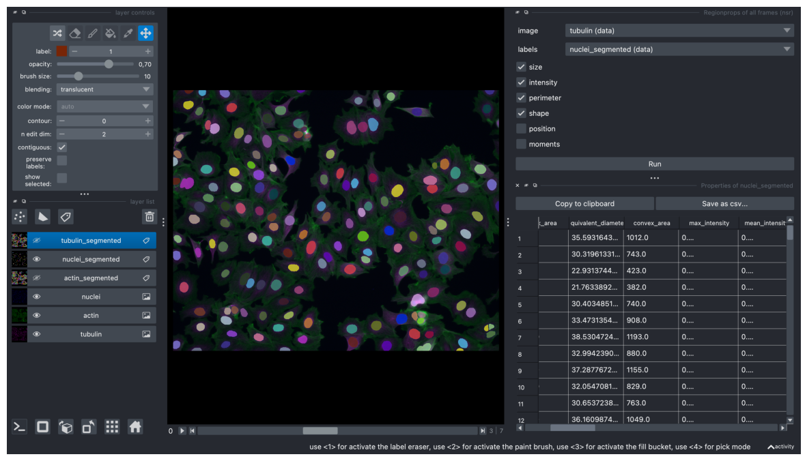

Extracting Quantitative Measurements from All Channels#
import os
import tifffile as tif
import numpy as np
import napari
import pandas as pd
import pyclesperanto_prototype as cle
from tqdm import tqdm
import matplotlib.pyplot as plt
from skimage.measure import label, regionprops_table
pd.set_option('display.max_columns', None)
# create napari viewer instance
if 'viewer' not in globals():
viewer = napari.Viewer()
path = "/Users/laura/projects/Bio-image_analysis_school_ScadsAI/prepared_dataset"
nuclei_labels_path = os.path.join(path, "labels_nuclei")
actin_labels_path = os.path.join(path, "labels_actin")
tubulin_labels_path = os.path.join(path, "labels_tubulin")
filenames = [fname for fname in os.listdir(path) if fname.endswith(".tif")]
filenames
['aphidicolin_timelapse.tif',
'nocodazole_timelapse.tif',
'AZ-I_timelapse.tif',
'taxol_timelapse.tif',
'latrunculin B_timelapse.tif',
'epothilone B_timelapse.tif',
'monastrol_timelapse.tif',
'AZ-H_timelapse.tif',
'DMSO_timelapse.tif',
'colchicine_timelapse.tif',
'doxorubicin_timelapse.tif',
'cytochalasin B_timelapse.tif',
'AZ-A_timelapse.tif']
Process one image as an example#
filename = "aphidicolin_timelapse"
# read an image, which will be processed as an example
img = tif.imread(os.path.join(path, f'{filename}.tif'))
# load nuclei and actin segmentation
labels_nuclei = tif.imread(os.path.join(nuclei_labels_path, f'{filename}_labels_dapi.tif'))
labels_actin = tif.imread(os.path.join(actin_labels_path, f'{filename}_labels_actin.tif'))
labels_tubulin = tif.imread(os.path.join(tubulin_labels_path, f'{filename}_labels_tubulin.tif'))
img.shape
(8, 1024, 1280, 3)
# np.newaxis adds a new axis to convert to 2D timelapse (otherwise napari interprets an image with shape 8,y,x as a 3D image)
# new image dimension for each channel will be (8, 1, 1024, 1280)
# this is optional, and can also be done in the viewer Plugins -> Convert to 2D timelapse
img = img[:, np.newaxis, :, :, :]
# do the same for all label images
labels_actin = labels_actin[:, np.newaxis, :, :]
labels_nuclei = labels_nuclei[:, np.newaxis, :, :]
labels_tubulin = labels_tubulin[:, np.newaxis, :, :]
img.shape
(8, 1, 1024, 1280, 3)
# viewer.add_image(img) # and then in the viewer right click on the layer - split RGB or:
viewer.add_image(
img,
name=["tubulin", "actin", "nuclei"],
colormap=["magenta", "green", "blue"],
channel_axis=4)
[<Image layer 'tubulin' at 0x1754359a0>,
<Image layer 'actin' at 0x28de57f40>,
<Image layer 'nuclei' at 0x171d96e20>]
# add segmentation layers to the viewer
viewer.add_labels(labels_actin, name="actin_segmented")
viewer.add_labels(labels_nuclei, name="nuclei_segmented")
viewer.add_labels(labels_tubulin, name="tubulin_segmented")
<Labels layer 'tubulin_segmented' at 0x29eb3bc70>
analyzing frame 0
analyzing frame 1
analyzing frame 2
analyzing frame 3
analyzing frame 4
analyzing frame 5
analyzing frame 6
analyzing frame 7
Napari status bar display of label properties disabled because https://github.com/napari/napari/issues/5417 and https://github.com/napari/napari/issues/4342
Quantitative features extraction interactively in napari#
Optional step. Measurements in the notebook performed a few cells below.
screenshot = viewer.screenshot(canvas_only=False)
plt.figure(figsize=(15, 10))
plt.imshow(screenshot)
plt.axis('off')
plt.show()

# if measurements were performed interactively in napari, now they can be accessted like this as a dictionary:
measurements_dict = viewer.layers["nuclei_segmented"].properties
# convert the dictionary to a dataframe
df = pd.DataFrame(measurements_dict)
df
| label | area | bbox_area | equivalent_diameter | convex_area | max_intensity | mean_intensity | min_intensity | perimeter | perimeter_crofton | extent | local_centroid-0 | local_centroid-1 | solidity | feret_diameter_max | major_axis_length | minor_axis_length | orientation | eccentricity | standard_deviation_intensity | aspect_ratio | roundness | circularity | frame | index | |
|---|---|---|---|---|---|---|---|---|---|---|---|---|---|---|---|---|---|---|---|---|---|---|---|---|---|
| 0 | 1 | 995.0 | 1140.0 | 35.593164 | 1012.0 | 0.318160 | 0.192936 | 0.105085 | 117.355339 | 113.941355 | 0.872807 | 13.660302 | 18.520603 | 0.983202 | 41.340053 | 40.112175 | 31.988605 | 1.412905 | 0.603347 | 0.034753 | 1.253952 | 0.787373 | 0.907877 | 0 | 1 |
| 1 | 2 | 722.0 | 864.0 | 30.319613 | 743.0 | 0.341404 | 0.232566 | 0.150121 | 103.112698 | 100.438485 | 0.835648 | 11.022161 | 17.437673 | 0.971736 | 39.824616 | 38.679820 | 24.131011 | 1.331999 | 0.781532 | 0.031844 | 1.602909 | 0.614439 | 0.853341 | 0 | 2 |
| 2 | 3 | 413.0 | 555.0 | 22.931374 | 423.0 | 0.228087 | 0.171470 | 0.128329 | 87.698485 | 85.824894 | 0.744144 | 5.702179 | 18.234867 | 0.976359 | 37.054015 | 35.867908 | 15.692725 | 1.558994 | 0.899211 | 0.018439 | 2.285639 | 0.408741 | 0.674801 | 0 | 3 |
| 3 | 4 | 372.0 | 468.0 | 21.763389 | 382.0 | 0.281840 | 0.177370 | 0.102663 | 89.006097 | 87.260938 | 0.794872 | 4.666667 | 21.000000 | 0.973822 | 39.458839 | 39.738610 | 12.541995 | 1.509661 | 0.948888 | 0.038201 | 3.168444 | 0.299935 | 0.590083 | 0 | 4 |
| 4 | 5 | 726.0 | 900.0 | 30.403485 | 740.0 | 0.326392 | 0.144293 | 0.065860 | 103.941125 | 101.223883 | 0.806667 | 10.513774 | 16.249311 | 0.981081 | 39.812058 | 37.585931 | 25.429371 | -1.301553 | 0.736382 | 0.044673 | 1.478052 | 0.654329 | 0.844446 | 0 | 5 |
| ... | ... | ... | ... | ... | ... | ... | ... | ... | ... | ... | ... | ... | ... | ... | ... | ... | ... | ... | ... | ... | ... | ... | ... | ... | ... |
| 1409 | 118 | 38.0 | 56.0 | 6.955796 | 38.0 | 0.376508 | 0.319449 | 0.276190 | 20.142136 | 21.777459 | 0.678571 | 3.500000 | 3.000000 | 1.000000 | 8.246211 | 7.864235 | 6.176876 | -0.589370 | 0.618939 | 0.028576 | 1.273174 | 0.782313 | 1.177016 | 7 | 118 |
| 1410 | 119 | 1097.0 | 1296.0 | 37.373035 | 1114.0 | 0.418413 | 0.241001 | 0.137143 | 122.426407 | 118.749029 | 0.846451 | 18.824977 | 17.696445 | 0.984740 | 41.048752 | 38.329324 | 36.802085 | -0.779520 | 0.279469 | 0.058766 | 1.041499 | 0.950724 | 0.919743 | 7 | 119 |
| 1411 | 120 | 740.0 | 891.0 | 30.695232 | 782.0 | 0.427937 | 0.226356 | 0.134603 | 106.769553 | 103.905400 | 0.830527 | 14.502703 | 15.629730 | 0.946292 | 36.235342 | 34.693218 | 28.141013 | -1.564113 | 0.584854 | 0.065014 | 1.232835 | 0.782803 | 0.815731 | 7 | 120 |
| 1412 | 121 | 569.0 | 736.0 | 26.916042 | 582.0 | 0.307302 | 0.170925 | 0.059683 | 93.112698 | 90.957891 | 0.773098 | 12.956063 | 16.377856 | 0.977663 | 33.615473 | 32.447875 | 23.567972 | -1.450031 | 0.687343 | 0.066007 | 1.376778 | 0.688097 | 0.824716 | 7 | 121 |
| 1413 | 122 | 51.0 | 75.0 | 8.058239 | 55.0 | 0.267302 | 0.212910 | 0.158730 | 31.899495 | 32.924135 | 0.680000 | 2.647059 | 7.470588 | 0.927273 | 15.033296 | 15.023275 | 4.513616 | -1.537877 | 0.953800 | 0.024578 | 3.328435 | 0.287707 | 0.629814 | 7 | 122 |
1414 rows × 25 columns
Note: There is a frame column, which indicates from which frame the object comes from. In our case, since our generated image is not a true timelapse, frame indicates at which compound concentration the image was taken.
Learn more about different extracted features here.
Same measurements can be done in the notebook#
# define properties that will be extracted
properties = ['label', 'area', 'bbox_area', 'equivalent_diameter', 'mean_intensity', 'min_intensity', 'max_intensity', 'perimeter', 'perimeter_crofton', 'extent', 'local_centroid', 'solidity', 'feret_diameter_max', 'major_axis_length', 'minor_axis_length', 'eccentricity', 'orientation', 'solidity']
measurements_list = []
for t in tqdm(range(img.shape[0])):
image = img[t, 0, :, :, 2] # or viewer.layers["nuclei"].data[t]
# measurements = cle.statistics_of_labelled_pixels(intensity_image = viewer.layers["nuclei"].data[t], label_image = labels_nuclei[t][0])
measurements = regionprops_table(labels_nuclei[t][0], intensity_image=image, properties=properties)
# neighborhood statistics if needed can be extracted like this:
# neighborhood_stats = cle.statistics_of_labelled_neighbors(label_image = labels_nuclei[t][0], nearest_neighbor_ns=(2, 4, 6), proximal_distances=([100]), dilation_radii=[])
# convert dictionaries to pandas dataframe
df = pd.DataFrame(measurements)
# df_neighbors = pd.DataFrame(neighborhood_stats) neighborhood measurements performed only for actin & tubulin channels
# if neighborhood measurements were extracted both dataframes can be combined like this
# combined_df = pd.merge(df, df_neighbors, on='label')
measurements_list.append(df)
100%|█████████████████████████████████████████████████████████████████████████████████████████████████████████████████████████████████████████| 8/8 [00:01<00:00, 7.74it/s]
# combine measurements from all timepoints into one dataframe
dapi_df = pd.concat(measurements_list, keys=range(len(measurements_list)))
# reset index to move 'frame' from the index to a regular column
dapi_df.reset_index(level=0, inplace=True)
dapi_df.rename(columns={'level_0': 'frame'}, inplace=True)
# add a suffix '_dapi' to each column name except 'label' to indicate that the measurements are coming from this channel
final_df = dapi_df.rename(columns={col: col + '_dapi' if col not in ['label', 'frame'] else col for col in dapi_df.columns})
final_df
| frame | label | area_dapi | bbox_area_dapi | equivalent_diameter_dapi | mean_intensity_dapi | min_intensity_dapi | max_intensity_dapi | perimeter_dapi | perimeter_crofton_dapi | extent_dapi | local_centroid-0_dapi | local_centroid-1_dapi | solidity_dapi | feret_diameter_max_dapi | major_axis_length_dapi | minor_axis_length_dapi | eccentricity_dapi | orientation_dapi | |
|---|---|---|---|---|---|---|---|---|---|---|---|---|---|---|---|---|---|---|---|
| 0 | 0 | 1 | 995.0 | 1140.0 | 35.593164 | 0.291974 | 0.115909 | 0.415909 | 117.355339 | 113.941355 | 0.872807 | 13.660302 | 18.520603 | 0.983202 | 41.340053 | 40.112175 | 31.988605 | 0.603347 | 1.412905 |
| 1 | 0 | 2 | 722.0 | 864.0 | 30.319613 | 0.267253 | 0.093182 | 0.388636 | 103.112698 | 100.438485 | 0.835648 | 11.022161 | 17.437673 | 0.971736 | 39.824616 | 38.679820 | 24.131011 | 0.781532 | 1.331999 |
| 2 | 0 | 3 | 413.0 | 555.0 | 22.931374 | 0.247964 | 0.152273 | 0.343182 | 87.698485 | 85.824894 | 0.744144 | 5.702179 | 18.234867 | 0.976359 | 37.054015 | 35.867908 | 15.692725 | 0.899211 | 1.558994 |
| 3 | 0 | 4 | 372.0 | 468.0 | 21.763389 | 0.230285 | 0.102273 | 0.329545 | 89.006097 | 87.260938 | 0.794872 | 4.666667 | 21.000000 | 0.973822 | 39.458839 | 39.738610 | 12.541995 | 0.948888 | 1.509661 |
| 4 | 0 | 5 | 726.0 | 900.0 | 30.403485 | 0.256483 | 0.138636 | 0.361364 | 103.941125 | 101.223883 | 0.806667 | 10.513774 | 16.249311 | 0.981081 | 39.812058 | 37.585931 | 25.429371 | 0.736382 | -1.301553 |
| ... | ... | ... | ... | ... | ... | ... | ... | ... | ... | ... | ... | ... | ... | ... | ... | ... | ... | ... | ... |
| 117 | 7 | 118 | 38.0 | 56.0 | 6.955796 | 0.253128 | 0.177358 | 0.328302 | 20.142136 | 21.777459 | 0.678571 | 3.500000 | 3.000000 | 1.000000 | 8.246211 | 7.864235 | 6.176876 | 0.618939 | -0.589370 |
| 118 | 7 | 119 | 1097.0 | 1296.0 | 37.373035 | 0.285723 | 0.147170 | 0.381132 | 122.426407 | 118.749029 | 0.846451 | 18.824977 | 17.696445 | 0.984740 | 41.048752 | 38.329324 | 36.802085 | 0.279469 | -0.779520 |
| 119 | 7 | 120 | 740.0 | 891.0 | 30.695232 | 0.251020 | 0.135849 | 0.324528 | 106.769553 | 103.905400 | 0.830527 | 14.502703 | 15.629730 | 0.946292 | 36.235342 | 34.693218 | 28.141013 | 0.584854 | -1.564113 |
| 120 | 7 | 121 | 569.0 | 736.0 | 26.916042 | 0.218238 | 0.154717 | 0.286792 | 93.112698 | 90.957891 | 0.773098 | 12.956063 | 16.377856 | 0.977663 | 33.615473 | 32.447875 | 23.567972 | 0.687343 | -1.450031 |
| 121 | 7 | 122 | 51.0 | 75.0 | 8.058239 | 0.193045 | 0.150943 | 0.241509 | 31.899495 | 32.924135 | 0.680000 | 2.647059 | 7.470588 | 0.927273 | 15.033296 | 15.023275 | 4.513616 | 0.953800 | -1.537877 |
1414 rows × 19 columns
Get measurements for actin and tubulin channels#
Actin#
measurements_list = []
for t in tqdm(range(img.shape[0])):
image = img[t, 0, :, :, 1] # or viewer.layers["actin"].data[t]
measurements = regionprops_table(labels_nuclei[t][0], intensity_image=image, properties=properties)
#neighborhood_stats = cle.statistics_of_labelled_neighbors(label_image = labels_actin[t][0], nearest_neighbor_ns=(2, 4, 6), proximal_distances=([100]), dilation_radii=[])
# convert dictionaries to pandas dataframe
df = pd.DataFrame(measurements)
#df_neighbors = pd.DataFrame(neighborhood_stats)
#combined_df = pd.merge(df, df_neighbors, on='label')
measurements_list.append(df)
100%|█████████████████████████████████████████████████████████████████████████████████████████████████████████████████████████████████████████| 8/8 [00:01<00:00, 7.80it/s]
# combine measurements from all timepoints into one dataframe
actin_df = pd.concat(measurements_list, keys=range(len(measurements_list)))
# reset index to move 'frame' from the index to a regular column
actin_df.reset_index(level=0, inplace=True)
actin_df.rename(columns={'level_0': 'frame'}, inplace=True)
# add a suffix '_actin' to each column name except 'label' to indicate that the measurements are coming from this channel
actin_final_df = actin_df.rename(columns={col: col + '_actin' if col not in ['label', 'frame'] else col for col in actin_df.columns})
measurements_list = []
for t in tqdm(range(img.shape[0])):
image = img[t, 0, :, :, 0] # or viewer.layers["tubulin"].data[t]
measurements = regionprops_table(labels_nuclei[t][0], intensity_image=image, properties=properties)
# measurements = cle.statistics_of_labelled_pixels(intensity_image = image, label_image = labels_tubulin[t][0])
# neighborhood_stats = cle.statistics_of_labelled_neighbors(label_image = labels_tubulin[t][0], nearest_neighbor_ns=(2, 4, 6), proximal_distances=([100]), dilation_radii=[])
# convert dictionaries to pandas dataframe
df = pd.DataFrame(measurements)
# df_neighbors = pd.DataFrame(neighborhood_stats)
# combined_df = pd.merge(df, df_neighbors, on='label')
measurements_list.append(df)
100%|█████████████████████████████████████████████████████████████████████████████████████████████████████████████████████████████████████████| 8/8 [00:00<00:00, 8.70it/s]
# combine measurements from all timepoints into one dataframe
tubulin_df = pd.concat(measurements_list, keys=range(len(measurements_list)))
# reset index to move 'frame' from the index to a regular column
tubulin_df.reset_index(level=0, inplace=True)
tubulin_df.rename(columns={'level_0': 'frame'}, inplace=True)
# add a suffix '_tubulin' to each column name except 'label' to indicate that the measurements are coming from this channel
tubulin_final_df = tubulin_df.rename(columns={col: col + '_tubulin' if col not in ['label', 'frame'] else col for col in tubulin_df.columns})
Combine all dataframes into one#
df_combined = pd.merge(final_df, actin_final_df, on=['label', 'frame'])
df_combined = pd.merge(df_combined, tubulin_final_df, on=['label', 'frame'])
df_combined
| frame | label | area_dapi | bbox_area_dapi | equivalent_diameter_dapi | mean_intensity_dapi | min_intensity_dapi | max_intensity_dapi | perimeter_dapi | perimeter_crofton_dapi | extent_dapi | local_centroid-0_dapi | local_centroid-1_dapi | solidity_dapi | feret_diameter_max_dapi | major_axis_length_dapi | minor_axis_length_dapi | eccentricity_dapi | orientation_dapi | area_actin | bbox_area_actin | equivalent_diameter_actin | mean_intensity_actin | min_intensity_actin | max_intensity_actin | perimeter_actin | perimeter_crofton_actin | extent_actin | local_centroid-0_actin | local_centroid-1_actin | solidity_actin | feret_diameter_max_actin | major_axis_length_actin | minor_axis_length_actin | eccentricity_actin | orientation_actin | area_tubulin | bbox_area_tubulin | equivalent_diameter_tubulin | mean_intensity_tubulin | min_intensity_tubulin | max_intensity_tubulin | perimeter_tubulin | perimeter_crofton_tubulin | extent_tubulin | local_centroid-0_tubulin | local_centroid-1_tubulin | solidity_tubulin | feret_diameter_max_tubulin | major_axis_length_tubulin | minor_axis_length_tubulin | eccentricity_tubulin | orientation_tubulin | |
|---|---|---|---|---|---|---|---|---|---|---|---|---|---|---|---|---|---|---|---|---|---|---|---|---|---|---|---|---|---|---|---|---|---|---|---|---|---|---|---|---|---|---|---|---|---|---|---|---|---|---|---|---|---|
| 0 | 0 | 1 | 995.0 | 1140.0 | 35.593164 | 0.291974 | 0.115909 | 0.415909 | 117.355339 | 113.941355 | 0.872807 | 13.660302 | 18.520603 | 0.983202 | 41.340053 | 40.112175 | 31.988605 | 0.603347 | 1.412905 | 995.0 | 1140.0 | 35.593164 | 0.114951 | 0.092154 | 0.149440 | 117.355339 | 113.941355 | 0.872807 | 13.660302 | 18.520603 | 0.983202 | 41.340053 | 40.112175 | 31.988605 | 0.603347 | 1.412905 | 995.0 | 1140.0 | 35.593164 | 0.192936 | 0.105085 | 0.318160 | 117.355339 | 113.941355 | 0.872807 | 13.660302 | 18.520603 | 0.983202 | 41.340053 | 40.112175 | 31.988605 | 0.603347 | 1.412905 |
| 1 | 0 | 2 | 722.0 | 864.0 | 30.319613 | 0.267253 | 0.093182 | 0.388636 | 103.112698 | 100.438485 | 0.835648 | 11.022161 | 17.437673 | 0.971736 | 39.824616 | 38.679820 | 24.131011 | 0.781532 | 1.331999 | 722.0 | 864.0 | 30.319613 | 0.199218 | 0.115816 | 0.387298 | 103.112698 | 100.438485 | 0.835648 | 11.022161 | 17.437673 | 0.971736 | 39.824616 | 38.679820 | 24.131011 | 0.781532 | 1.331999 | 722.0 | 864.0 | 30.319613 | 0.232566 | 0.150121 | 0.341404 | 103.112698 | 100.438485 | 0.835648 | 11.022161 | 17.437673 | 0.971736 | 39.824616 | 38.679820 | 24.131011 | 0.781532 | 1.331999 |
| 2 | 0 | 3 | 413.0 | 555.0 | 22.931374 | 0.247964 | 0.152273 | 0.343182 | 87.698485 | 85.824894 | 0.744144 | 5.702179 | 18.234867 | 0.976359 | 37.054015 | 35.867908 | 15.692725 | 0.899211 | 1.558994 | 413.0 | 555.0 | 22.931374 | 0.148291 | 0.112080 | 0.278954 | 87.698485 | 85.824894 | 0.744144 | 5.702179 | 18.234867 | 0.976359 | 37.054015 | 35.867908 | 15.692725 | 0.899211 | 1.558994 | 413.0 | 555.0 | 22.931374 | 0.171470 | 0.128329 | 0.228087 | 87.698485 | 85.824894 | 0.744144 | 5.702179 | 18.234867 | 0.976359 | 37.054015 | 35.867908 | 15.692725 | 0.899211 | 1.558994 |
| 3 | 0 | 4 | 372.0 | 468.0 | 21.763389 | 0.230285 | 0.102273 | 0.329545 | 89.006097 | 87.260938 | 0.794872 | 4.666667 | 21.000000 | 0.973822 | 39.458839 | 39.738610 | 12.541995 | 0.948888 | 1.509661 | 372.0 | 468.0 | 21.763389 | 0.172676 | 0.100872 | 0.283935 | 89.006097 | 87.260938 | 0.794872 | 4.666667 | 21.000000 | 0.973822 | 39.458839 | 39.738610 | 12.541995 | 0.948888 | 1.509661 | 372.0 | 468.0 | 21.763389 | 0.177370 | 0.102663 | 0.281840 | 89.006097 | 87.260938 | 0.794872 | 4.666667 | 21.000000 | 0.973822 | 39.458839 | 39.738610 | 12.541995 | 0.948888 | 1.509661 |
| 4 | 0 | 5 | 726.0 | 900.0 | 30.403485 | 0.256483 | 0.138636 | 0.361364 | 103.941125 | 101.223883 | 0.806667 | 10.513774 | 16.249311 | 0.981081 | 39.812058 | 37.585931 | 25.429371 | 0.736382 | -1.301553 | 726.0 | 900.0 | 30.403485 | 0.168029 | 0.109589 | 0.250311 | 103.941125 | 101.223883 | 0.806667 | 10.513774 | 16.249311 | 0.981081 | 39.812058 | 37.585931 | 25.429371 | 0.736382 | -1.301553 | 726.0 | 900.0 | 30.403485 | 0.144293 | 0.065860 | 0.326392 | 103.941125 | 101.223883 | 0.806667 | 10.513774 | 16.249311 | 0.981081 | 39.812058 | 37.585931 | 25.429371 | 0.736382 | -1.301553 |
| ... | ... | ... | ... | ... | ... | ... | ... | ... | ... | ... | ... | ... | ... | ... | ... | ... | ... | ... | ... | ... | ... | ... | ... | ... | ... | ... | ... | ... | ... | ... | ... | ... | ... | ... | ... | ... | ... | ... | ... | ... | ... | ... | ... | ... | ... | ... | ... | ... | ... | ... | ... | ... | ... |
| 1409 | 7 | 118 | 38.0 | 56.0 | 6.955796 | 0.253128 | 0.177358 | 0.328302 | 20.142136 | 21.777459 | 0.678571 | 3.500000 | 3.000000 | 1.000000 | 8.246211 | 7.864235 | 6.176876 | 0.618939 | -0.589370 | 38.0 | 56.0 | 6.955796 | 0.178032 | 0.148515 | 0.213579 | 20.142136 | 21.777459 | 0.678571 | 3.500000 | 3.000000 | 1.000000 | 8.246211 | 7.864235 | 6.176876 | 0.618939 | -0.589370 | 38.0 | 56.0 | 6.955796 | 0.319449 | 0.276190 | 0.376508 | 20.142136 | 21.777459 | 0.678571 | 3.500000 | 3.000000 | 1.000000 | 8.246211 | 7.864235 | 6.176876 | 0.618939 | -0.589370 |
| 1410 | 7 | 119 | 1097.0 | 1296.0 | 37.373035 | 0.285723 | 0.147170 | 0.381132 | 122.426407 | 118.749029 | 0.846451 | 18.824977 | 17.696445 | 0.984740 | 41.048752 | 38.329324 | 36.802085 | 0.279469 | -0.779520 | 1097.0 | 1296.0 | 37.373035 | 0.147681 | 0.114569 | 0.230552 | 122.426407 | 118.749029 | 0.846451 | 18.824977 | 17.696445 | 0.984740 | 41.048752 | 38.329324 | 36.802085 | 0.279469 | -0.779520 | 1097.0 | 1296.0 | 37.373035 | 0.241001 | 0.137143 | 0.418413 | 122.426407 | 118.749029 | 0.846451 | 18.824977 | 17.696445 | 0.984740 | 41.048752 | 38.329324 | 36.802085 | 0.279469 | -0.779520 |
| 1411 | 7 | 120 | 740.0 | 891.0 | 30.695232 | 0.251020 | 0.135849 | 0.324528 | 106.769553 | 103.905400 | 0.830527 | 14.502703 | 15.629730 | 0.946292 | 36.235342 | 34.693218 | 28.141013 | 0.584854 | -1.564113 | 740.0 | 891.0 | 30.695232 | 0.207514 | 0.125884 | 0.325318 | 106.769553 | 103.905400 | 0.830527 | 14.502703 | 15.629730 | 0.946292 | 36.235342 | 34.693218 | 28.141013 | 0.584854 | -1.564113 | 740.0 | 891.0 | 30.695232 | 0.226356 | 0.134603 | 0.427937 | 106.769553 | 103.905400 | 0.830527 | 14.502703 | 15.629730 | 0.946292 | 36.235342 | 34.693218 | 28.141013 | 0.584854 | -1.564113 |
| 1412 | 7 | 121 | 569.0 | 736.0 | 26.916042 | 0.218238 | 0.154717 | 0.286792 | 93.112698 | 90.957891 | 0.773098 | 12.956063 | 16.377856 | 0.977663 | 33.615473 | 32.447875 | 23.567972 | 0.687343 | -1.450031 | 569.0 | 736.0 | 26.916042 | 0.126525 | 0.104668 | 0.161245 | 93.112698 | 90.957891 | 0.773098 | 12.956063 | 16.377856 | 0.977663 | 33.615473 | 32.447875 | 23.567972 | 0.687343 | -1.450031 | 569.0 | 736.0 | 26.916042 | 0.170925 | 0.059683 | 0.307302 | 93.112698 | 90.957891 | 0.773098 | 12.956063 | 16.377856 | 0.977663 | 33.615473 | 32.447875 | 23.567972 | 0.687343 | -1.450031 |
| 1413 | 7 | 122 | 51.0 | 75.0 | 8.058239 | 0.193045 | 0.150943 | 0.241509 | 31.899495 | 32.924135 | 0.680000 | 2.647059 | 7.470588 | 0.927273 | 15.033296 | 15.023275 | 4.513616 | 0.953800 | -1.537877 | 51.0 | 75.0 | 8.058239 | 0.173198 | 0.147100 | 0.199434 | 31.899495 | 32.924135 | 0.680000 | 2.647059 | 7.470588 | 0.927273 | 15.033296 | 15.023275 | 4.513616 | 0.953800 | -1.537877 | 51.0 | 75.0 | 8.058239 | 0.212910 | 0.158730 | 0.267302 | 31.899495 | 32.924135 | 0.680000 | 2.647059 | 7.470588 | 0.927273 | 15.033296 | 15.023275 | 4.513616 | 0.953800 | -1.537877 |
1414 rows × 53 columns
# since we have a lot of measurements, remove a few columns, which are not interesting, e.g. relevant ones for 3D images or redundant
# substrings_to_check = ["_z_", "bbox_depth_", "bbox_min_", "bbox_max_", "touch_portion"]
# columns_to_drop = [col for col in df_combined.columns if any(sub in col for sub in substrings_to_check)]
# columns_to_drop.extend(["original_label_dapi", "original_label_actin", "original_label_tubulin"])
# df_combined.drop(columns=columns_to_drop, inplace=True)
# df_combined
viewer.layers['tubulin_segmented'].properties = df_combined
# save the dataframe to a csv file
df_combined.to_csv(f'{filename}_measurements.csv', index=False)